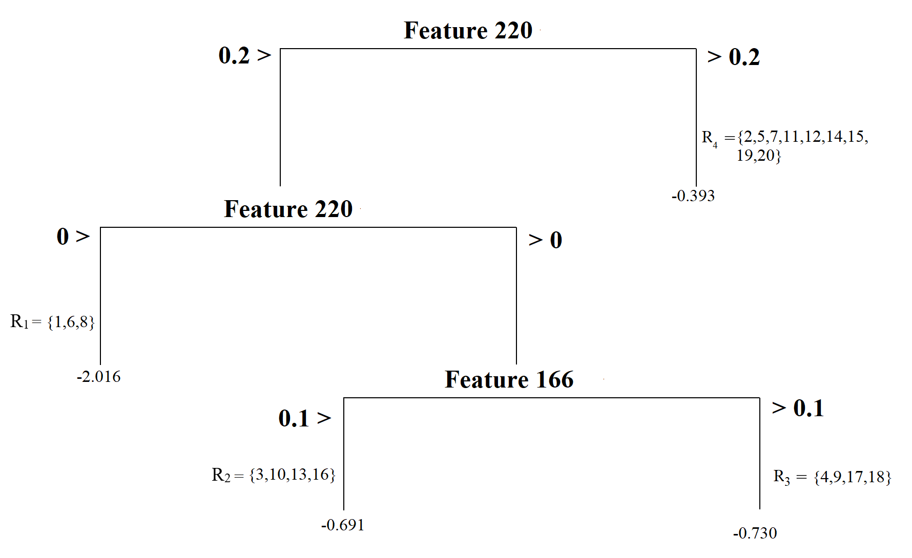
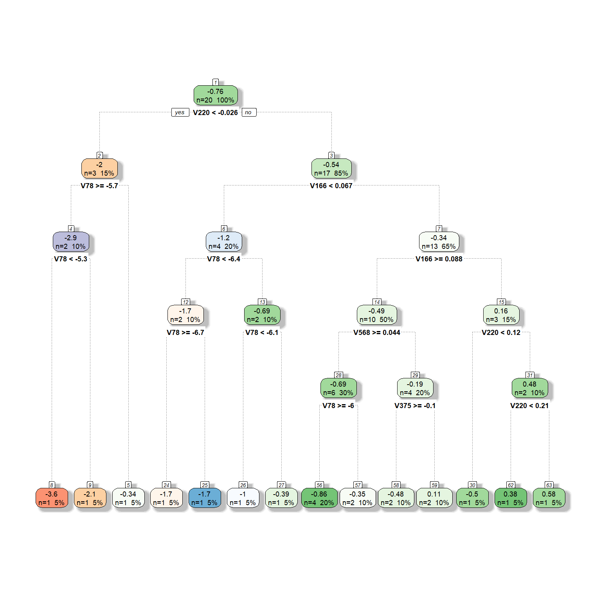
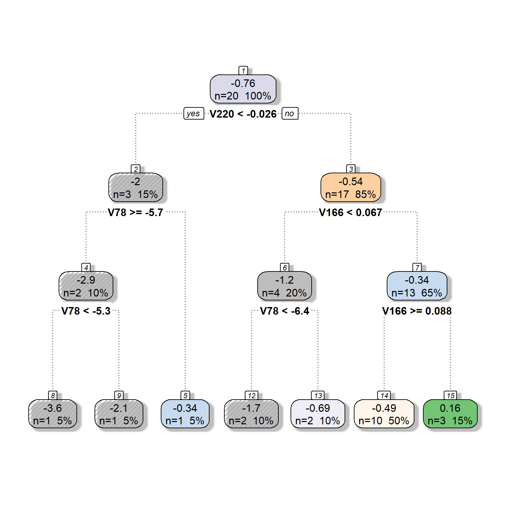

[Updated: Sun, Nov 27, 2022 - 14:07:28 ]
1. Decision Trees
We will again consider the toy readability dataset (N=20) we used to predict a readability score from Feature 220 and Feature 166
readability_sub <- read.csv('./data/readability_sub.csv',header=TRUE)
readability_sub[,c('V220','V166','target')] V220 V166 target
1 -0.13908258 0.19028091 -2.06282395
2 0.21764143 0.07101288 0.58258607
3 0.05812133 0.03993277 -1.65313060
4 0.02526429 0.18845809 -0.87390681
5 0.22430885 0.06200715 -1.74049148
6 -0.07795373 0.10754109 -3.63993555
7 0.43400714 0.12202360 -0.62284268
8 -0.24364550 0.02454670 -0.34426981
9 0.15893717 0.10422343 -1.12298826
10 0.14496475 0.02339597 -0.99857142
11 0.34222975 0.22065343 -0.87656742
12 0.25219145 0.10865010 -0.03304643
13 0.03532625 0.07549474 -0.49529863
14 0.36410633 0.18675801 0.12453660
15 0.29988593 0.11618323 0.09678258
16 0.19837037 0.08272671 0.38422270
17 0.07807041 0.10235218 -0.58143038
18 0.07935690 0.11618605 -0.34324576
19 0.57000953 -0.02385423 -0.39054205
20 0.34523284 0.09299514 -0.675484111.1. Basics of a decision tree
1.1.1. Tree Structure
Let’s imagine a simple tree model to predict readability scores from Feature 220.

This model splits the sample into two pieces using a split point of 0.2 for the predictor variable (Feature 220). There are 11 observations with Feature 220 less than 0.2 and nine with Feature 220 larger than 0.2. The top of the tree model is called root node, and the \(R_1\) and \(R_2\) in this model are called terminal nodes. This model has two terminal nodes. There is a number assigned to each terminal node. These numbers are the average values for the target outcome (readability score) for those observations in that specific node. It can be symbolically shown as
\[\bar{Y_t} = \frac{1}{n_t}\sum_{i\epsilon R_t} Y_i,\]
where \(n_t\) is the number of observations in a terminal node, and \(R_t\) represents the set of observations in the \(t_{th}\) node.
There is also a concept of depth of a tree. The root node is counted as depth 0, and each split increases the depth of the tree by one. In this case, we can say that this tree model has a depth of one.
We can increase the complexity of our tree model by splitting the first node into two more nodes using a split point of 0. Now, our model has a depth of two and a total of three terminal nodes. Each terminal node is assigned a score by computing the average outcome for those observations in that node.

The tree model can have nodes from splitting another variable. For instance, the model below first splits the observations based on Feature 220, then based on Feature 166, yielding a tree model with three nodes with a depth of two. This tree model’s complexity is the same as the previous one’s; the only difference is that we have nodes from two predictors instead of one.

A final example is another tree model with increasing complexity and having a depth of three and four nodes. It first splits observations based on whether or not Feature 220 is less than 0.2, then splits observations based on whether or not Feature 220 is less than 0, and finally splits observations based on whether or not Feature 166 is less than 0.1.

1.1.2. Predictions
Suppose you developed a tree model and decided to use this model to make predictions for new observations. Let’s assume our model is the below. How do we use this model to make predictions for new observations?
Suppose that there is a new reading passage to predict the readability score based on this tree model. The value for Feature 220 for this new reading passage is - 0.5, and the value for Feature 166 is 0.
To predict the readability score for this reading passage, we must decide which node this passage would belong to in this tree model. You can trace a path starting from the root node (top of the tree) and see where this reading passage will end.
As you can see below, this reading passage would be in the first node based on the observed values for these two predictors, and so we predict that the readability score for this new reading passage is equal to -2.016.

If we have another new reading passage with the value for Feature 220 as 0.1 and Feature 166 as 0, then it would end up in the second node and we would predict the readability score as -0.691.

1.1.3. Loss function
When we fit a tree model, the algorithm decides the best split that minimizes the sum of squared errors. The sum of squared error from a tree model can be shown as
\[ SSE = \sum_{t=1}^{T} \sum_{i \epsilon R_t} (Y_i - \hat{Y}_{R_{t}})^2,\]
where \(T\) is the total number of terminal nodes in the tree model, and \(\hat{Y}_{R_{t}}\) is the prediction for the observations in the \(t^{th}\) node (average target outcome for those observations in the \(t^{th}\) node).
1.1.4. Growing a tree
Deciding on a root node and then growing a tree model from that root node can become computationally exhaustive depending on the size of the dataset and the number of variables. The decision tree algorithm searches all variables designated as predictors in the dataset at all possible split points for these variables, calculates the SSE for all possible splits, and then finds the split that would reduce the prediction error the most. The search continues by growing the tree model sequentially until there is no more split left that would give better predictions.
I will demonstrate the logic of this search process with the toy dataset (N=20) and two predictor variables: Feature 220 and Feature 166. Before we start our search process, we should come up with a baseline SSE to decide whether any future split will improve our predictions. We can imagine that a model with no split and using the mean of all 20 observations to predict the target outcome is the simplest baseline model. So, if we compute the sum of squared residuals assuming that we predict every observation with the mean of these 20 observations, that could be a baseline measure. As you see below, if we use the mean target score as our prediction for the 20 observations, the sum of squared residuals would be 17.73. We will improve this number over the baseline by growing a tree model.
# average outcome
mu <- mean(readability_sub$target)
# SSE for baseline model
sum((readability_sub$target - mu)^2)[1] 17.73309Find the root node
The first step in building the tree model is to find the root node. In this case, we have two candidates for the root node: Feature 220 and Feature 166. We want to know which predictor should be the root node and what value we should use to split to improve the baseline SSE the most. The following is what the process would look
Pick a split point
Divide 20 observations into two nodes based on the split point
Calculate the average target outcome within each node as predictions for the observations in that node
Calculate SSE within each node using the predictions from Step 3, and sum them all across two nodes.
Repeat Steps 1 - 4 for every possible split point, and find the best split point with the minimum SSE
Repeat Steps 1 - 5 for every possible predictor.
The code below implements Step 1 - Step 5 for the predictor Feature 220.
splits1 <- seq(-0.24,0.56,0.001)
# For every split point, partition the observations into two groups and then
# make predictions based on the partitioning. Save the SSE in an empy object
sse1 <- c()
for(i in 1:length(splits1)){
gr1 <- which(readability_sub$V220 <= splits1[i])
gr2 <- which(readability_sub$V220 > splits1[i])
pr1 <- mean(readability_sub[gr1,]$target)
pr2 <- mean(readability_sub[gr2,]$target)
sse1[i] = sum((readability_sub[gr1,]$target - pr1)^2) +
sum((readability_sub[gr2,]$target - pr2)^2)
}
ggplot()+
geom_line(aes(x=splits1,y=sse1))+
xlab('Split Points (Feature 220)')+
ylab('Sum of Squared Residuals')+
theme_bw()+
geom_vline(xintercept = -0.026,lty=2)+
annotate('text',x=-0.0,y=16,label='-0.026')min(sse1)[1] 12.1976The search process indicates that the best split point for Feature 220 is -0.026. If we divide the observations into two nodes based on Feature 220 using the split point -0.026, SSE would be equal to 12.20, a significant improvement over the baseline model.
We will now repeat the same process for Feature 166. The code below implements Step 1 - Step 5 for the predictor Feature 166.
splits2 <- seq(-0.02,0.22,.001)
# For every split point, partition the observations into two groups and then
# make predictions based on the partitioning. Save the SSE in an empyy object
sse2 <- c()
for(i in 1:length(splits2)){
gr1 <- which(readability_sub$V166 <= splits2[i])
gr2 <- which(readability_sub$V166 > splits2[i])
pr1 <- mean(readability_sub[gr1,]$target)
pr2 <- mean(readability_sub[gr2,]$target)
sse2[i] = sum((readability_sub[gr1,]$target - pr1)^2) +
sum((readability_sub[gr2,]$target - pr2)^2)
}
ggplot()+
geom_line(aes(x=splits2,y=sse2))+
xlab('Split Points (Feature 166)')+
ylab('Sum of Squared Residuals')+
theme_bw()+
geom_vline(xintercept = 0.189,lty=2)+
annotate('text',x=0.195,y=18,label='0.189')min(sse2)[1] 16.62429The search process indicates that the best split point for Feature 166 is 0.19. If we divide the observations into two nodes based on Feature 166 using the split point 0.19, SSE would be equal to 16.62, also an improvement over the baseline model.
We have two choices for the root node (because we assume we only have two predictors):
- Feature 220, Best split point = -0.026, SSE = 12.20
- Feature 166, Best split point = 0.189, SSE = 16.62
Both options improve our predictions over the baseline (SSE = 17.73), but one is better. Therefore, our final decision to start growing our tree is to pick Feature 220 as our root node and split it at -0.07. Our tree model starts growing!

Now, we have to decide if we should add another split to either one of these two nodes. There are now four possible split scenarios.
For the first terminal node on the left, we can split the observations based on Feature 220.
For the first terminal node on the left, we can split the observations based on Feature 166.
For the second terminal node on the right, we can split the observations based on Feature 220.
For the second terminal node on the right, we can split the observations based on Feature 166.
For each of these scenarios, we can implement Step 1 - Step 4, identifying the best split point and what SSE that split yields. The code below implements these steps for all four scenarios.
Scenario 1:
node1 <- c(1,6,8)
node2 <- c(2,3,4,5,7,9,10,11,12,13,14,15,16,17,18,19,20)
# Splits based on Feature220 on node 1
splits1 <- seq(-0.24,0.56,0.001)
sse1 <- c()
for(i in 1:length(splits1)){
gr1 <- which(readability_sub[node1,]$V220 <= splits1[i])
gr2 <- which(readability_sub[node1,]$V220 > splits1[i])
gr3 <- node2
pr1 <- mean(readability_sub[node1[gr1],]$target)
pr2 <- mean(readability_sub[node1[gr2],]$target)
pr3 <- mean(readability_sub[node2,]$target)
sse1[i] = sum((readability_sub[node1[gr1],]$target - pr1)^2) +
sum((readability_sub[node1[gr2],]$target - pr2)^2) +
sum((readability_sub[node2,]$target - pr3)^2)
}
ggplot()+
geom_line(aes(x=splits1,y=sse1))+
xlab('Split Points (Feature 220) on Node 1')+
ylab('Sum of Squared Residuals')+
theme_bw()+
geom_vline(xintercept = -0.19,lty=2)+
annotate('text',x=-0.23,y=12,label='-0.19')min(sse1)[1] 8.007196Scenario 2:
# Splits based on Feature 166 for node 1
splits2 <- seq(-0.02,0.22,.001)
sse2 <- c()
for(i in 1:length(splits2)){
gr1 <- which(readability_sub[node1,]$V166 <= splits2[i])
gr2 <- which(readability_sub[node1,]$V166 > splits2[i])
gr3 <- node2
pr1 <- mean(readability_sub[node1[gr1],]$target)
pr2 <- mean(readability_sub[node1[gr2],]$target)
pr3 <- mean(readability_sub[node2,]$target)
sse2[i] = sum((readability_sub[node1[gr1],]$target - pr1)^2) +
sum((readability_sub[node1[gr2],]$target - pr2)^2) +
sum((readability_sub[node2,]$target - pr3)^2)
}
ggplot()+
geom_line(aes(x=splits2,y=sse2))+
xlab('Split Points (Feature 166) on Node 1')+
ylab('Sum of Squared Residuals')+
theme_bw()+
geom_vline(xintercept = 0.066,lty=2)+
annotate('text',x=0.06,y=12,label='0.066')min(sse2)[1] 8.007196Scenario 3:
# Splits based on Feature 220 for node 2
splits3 <- seq(-0.24,0.56,0.001)
sse3 <- c()
for(i in 1:length(splits3)){
gr1 <- which(readability_sub[node2,]$V220 <= splits3[i])
gr2 <- which(readability_sub[node2,]$V220 > splits3[i])
gr3 <- node1
pr1 <- mean(readability_sub[node2[gr1],]$target)
pr2 <- mean(readability_sub[node2[gr2],]$target)
pr3 <- mean(readability_sub[node1,]$target)
sse3[i] = sum((readability_sub[node2[gr1],]$target - pr1)^2) +
sum((readability_sub[node2[gr2],]$target - pr2)^2) +
sum((readability_sub[node1,]$target - pr3)^2)
}
ggplot()+
geom_line(aes(x=splits3,y=sse3))+
xlab('Split Points (Feature 220) on Node 2')+
ylab('Sum of Squared Residuals')+
theme_bw()+
geom_vline(xintercept = 0.178,lty=2)+
annotate('text',x=0.16,y=12,label='0.178')min(sse3)[1] 10.9436Scenario 4:
# Splits based on Feature 166 for node 2
splits4 <- seq(-0.02,0.22,.001)
sse4 <- c()
for(i in 1:length(splits4)){
gr1 <- which(readability_sub[node2,]$V166 <= splits4[i])
gr2 <- which(readability_sub[node2,]$V166 > splits4[i])
gr3 <- node1
pr1 <- mean(readability_sub[node2[gr1],]$target)
pr2 <- mean(readability_sub[node2[gr2],]$target)
pr3 <- mean(readability_sub[node1,]$target)
sse4[i] = sum((readability_sub[node2[gr1],]$target - pr1)^2) +
sum((readability_sub[node2[gr2],]$target - pr2)^2) +
sum((readability_sub[node1,]$target - pr3)^2)
}
ggplot()+
geom_line(aes(x=splits4,y=sse4))+
xlab('Split Points (Feature 166) on Node 2')+
ylab('Sum of Squared Residuals')+
theme_bw()+
geom_vline(xintercept = 0.067,lty=2)+
annotate('text',x=0.06,y=12,label='0.067')
min(sse4)[1] 9.964654Based on our search, the following splits provided the least SSEs:
1st terminal node, Split variable: Feature220, Split Point: -0.19, SSE = 8.01
1st terminal node, Split variable: Feature166, Split Point: 0.066, SSE = 8.01
2nd terminal node, Split variable: Feature220, Split Point: 0.178, SSE = 10.94
2nd terminal node, Split variable: Feature166, Split Point: 0.067, SSE = 9.96
We can decide to continue with either Scenario 1 or 2 because they yield the minimum SSE. Assuming we decide Scenario 1, our tree model now looks like this.

Termination of Growth
The search process continues until a specific criterion is met to stop the algorithm. There may be several conditions where we may constrain the growth and force the algorithm to stop searching for additional growth in the tree model. Some of these are listed below:
Minimizing SSE: the algorithm stops when there is no potential split in any of the existing nodes that would reduce the sum of squared errors.
The minimum number of observations to split: the algorithm does not attempt to split a node unless there is a certain number of observations in the node.
Maximum depth: The algorithm stops searching when the tree reaches a certain depth.
1.1.5. Pruning a tree
Overfitting and underfitting also occur as one develops a tree model. When the depth of a tree becomes unnecessarily large, there is a risk of overfitting (increased variance in model predictions across samples, less generalizable). On the other hand, when the depth of a tree is small, there is a risk of underfitting (increased bias in model predictions, underperforming model).
To balance the model variance and model bias, we considered penalizing significant coefficients in regression models yielding different types of penalty terms on the regression coefficients. There is a similar approach that can be applied to tree models. In the context of tree models, the loss function with a penalty term can be specified as
\[ SSE = \sum_{t=1}^{T} \sum_{i \epsilon R_t} (Y_i - \hat{Y}_{R_{t}})^2 + \alpha T.\]
The penalty term \(\alpha\) is known as the cost complexity parameter. The product term \(\alpha T\) increases as the number of terminal nodes increases in the model, so this term penalizes the increasing complexity of the tree model. By fine-tuning the value of \(\alpha\) through cross-validation, we can find a balance between model variance and bias, as we did for regression models. The process is called pruning because the terminal nodes from the tree are eliminated in a nested way for increasing levels of \(\alpha\).
1.2. Growing trees with
the rpart() function
1.2.1. A simple example
We can develop a tree model using the rpart() function
from the rpart package. Also, we will use the
fancyRpartPlot function from the rattle
package to get a nice plot of a tree model.
Let’s first replicate our search above to build a tree model predicting the readability scores from Feature 220 and Feature 166 in the toy dataset.
The
formulaargument works similarly as in the regression models. The variable name on the left side of~represents the outcome variable, and the variable names on the right side of~represent the predictor variables.The
dataargument provides the name of the dataset to find these variables specified in the formula.The
methodargument is set toanovato indicate that the outcome is a continuous variable and this is a regression problem.The
controlargument is a list object with several settings to be used during tree-building. For more information, check?rpart.control. You can accept the default values by not specifying it at all. Here, I specified a few important ones.minsplit=1forces algorithm not to attempt to split a node unless there is at least one observation.minbucket=1forces algorithm to have at least one observation for any node.maxdepth = 2forces algorithm to stop when the depth of a tree reaches to 2.cp=0indicates that we do not want to apply any penalty term (\(\lambda = 0\)) during the model building process.
fancyRpartPlot(dt,type=2,sub='') # ?prp
# check for a lot of settings for modifying this plotAs you can see, we got the same tree model we built in our search process in the earlier section. The algorithm went further and split the second node based on Feature 166.
You can also ask for more specific information about the
model-building process by running the summary()
function.
summary(dt)Call:
rpart(formula = target ~ V220 + V166, data = readability_sub,
method = "anova", control = list(minsplit = 1, cp = 0, minbucket = 1,
maxdepth = 2))
n= 20
CP nsplit rel error xerror xstd
1 0.3121563 0 1.0000000 1.145020 0.5190773
2 0.2363040 1 0.6878437 1.546951 0.5899322
3 0.1259195 2 0.4515397 1.480240 0.5000914
4 0.0000000 3 0.3256202 1.405163 0.4851406
Variable importance
V220 V166
81 19
Node number 1: 20 observations, complexity param=0.3121563
mean=-0.7633224, MSE=0.8866547
left son=2 (3 obs) right son=3 (17 obs)
Primary splits:
V220 < -0.02634472 to the left, improve=0.31215630, (0 missing)
V166 < 0.1893695 to the right, improve=0.06252757, (0 missing)
Node number 2: 3 observations, complexity param=0.236304
mean=-2.015676, MSE=1.811347
left son=4 (2 obs) right son=5 (1 obs)
Primary splits:
V220 < -0.191364 to the right, improve=0.7711389, (0 missing)
V166 < 0.0660439 to the right, improve=0.7711389, (0 missing)
Node number 3: 17 observations, complexity param=0.1259195
mean=-0.5423187, MSE=0.3978562
left son=6 (4 obs) right son=7 (13 obs)
Primary splits:
V166 < 0.06651001 to the left, improve=0.3301433, (0 missing)
V220 < 0.1786538 to the left, improve=0.1854056, (0 missing)
Node number 4: 2 observations
mean=-2.85138, MSE=0.6218203
Node number 5: 1 observations
mean=-0.3442698, MSE=0
Node number 6: 4 observations
mean=-1.195684, MSE=0.2982949
Node number 7: 13 observations
mean=-0.3412833, MSE=0.2567257 1.2.2. Tree pruning by increasing the complexity parameter
We will now expand the model by adding more predictors to be considered for the tree model. Suppose that we now have six different predictors to be considered for the tree model. We will provide the same settings with six predictors except for the complexity parameter. We will fit three models by setting the complexity parameter at 0, 0.05, and 0.1 to see what happens to the tree model as we increase the complexity parameter.
dt <- rpart(formula = target ~ V78 + V166 + V220 + V375 + V562 + V568,
data = readability_sub,
method = "anova",
control = list(minsplit=1,
cp=0,
minbucket = 1,
maxdepth = 5)
)
fancyRpartPlot(dt,type=2,sub='')
dt <- rpart(formula = target ~ V78 + V166 + V220 + V375 + V562 + V568,
data = readability_sub,
method = "anova",
control = list(minsplit=1,
cp=0.05,
minbucket = 1,
maxdepth = 5)
)
fancyRpartPlot(dt,type=2,sub='')
dt <- rpart(formula = target ~ V78 + V166 + V220 + V375 + V562 + V568,
data = readability_sub,
method = "anova",
control = list(minsplit=1,
cp=0.1,
minbucket = 1,
maxdepth = 5)
)
fancyRpartPlot(dt,type=2,sub='')2.
Predicting a continuous outcome with a Decision Tree via
caret:train()
Please review the following notebook that builds a prediction model using a decision tree algorithm for the readability dataset.
Building a Prediction Model using a Decision Tree
3.
Predicting a binary outcome with a Decision Tree via
caret:train()
Developing the decision trees to predict a binary outcome follows a very similar approach. The only difference is that the loss function and the metric used while selecting the best split is different while growing the tree model. A more special metric (e.g., gini index or entropy) is used to decide the best split that improves the accuracy of predictions.
This
document provides a detailed technical discussion of how
rpart builds a decision tree.
Please review the following notebook that builds a classification model using a decision tree algorithm for the full recidivism dataset.
Building a Classification Model using a Decision Tree